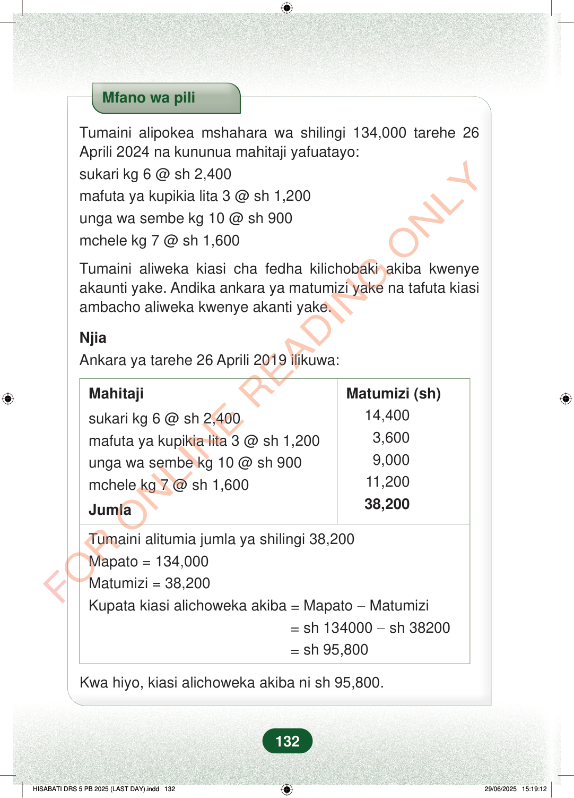

Mfano wa piliTumaini alipokea mshahara wa shilingi 134,000 tarehe 26Aprili 2024 na kununua mahitaji yafuatayo:sukari kg 6 @ sh 2,400mafuta ya kupikia lita 3 @ sh 1,200unga wa sembe kg 10 @ sh 900mchele kg 7 @ sh 1,600Tumaini aliweka kiasi cha fedha kilichobaki akiba kwenyeakaunti yake. Andika ankara ya matumizi yake na tafuta kiasiambacho aliweka kwenye akanti yake.NjiaAnkara ya tarehe 26 Aprili 2019 ilikuwa:MahitajiMatumizi (sh)sukari kg 6 @ sh 2,400mafuta ya kupikia lita 3 @ sh 1,200unga wa sembe kg 10 @ sh 900mchele kg 7 @ sh 1,60014,4003,6009,00011,20038,200JumlaTumaini alitumia jumla ya shilingi 38,200Mapato = 134,000Matumizi = 38,200Kupata kiasi alichoweka akiba=Mapato−Matumizi=sh 134000−sh 38200=sh 95,800Kwa hiyo, kiasi alichoweka akiba ni sh 95,800.132
Mfano wa pili
Tumaini alipokea mshahara wa shilingi 134,000 tarehe 26 Aprili 2024 na kununua mahitaji yafuatayo: sukari kg 6 @ sh 2,400 mafuta ya kupikia lita 3 @ sh 1,200 unga wa sembe kg 10 @ sh 900 mchele kg 7 @ sh 1,600
Tumaini aliweka kiasi cha fedha kilichobaki akiba kwenye akaunti yake. Andika ankara ya matumizi yake na tafuta kiasi ambacho aliweka kwenye akanti yake.
Njia Ankara ya tarehe 26 Aprili 2019 ilikuwa:
Mahitaji
Matumizi (sh)
sukari kg 6 @ sh 2,400 mafuta ya kupikia lita 3 @ sh 1,200 unga wa sembe kg 10 @ sh 900 mchele kg 7 @ sh 1,600
14,400 3,600 9,000 11,200 38,200
Jumla
Tumaini alitumia jumla ya shilingi 38,200 Mapato = 134,000 Matumizi = 38,200 Kupata kiasi alichoweka akiba = Mapato − Matumizi = sh 134000 − sh 38200 = sh 95,800
Kwa hiyo, kiasi alichoweka akiba ni sh 95,800.
132
Mfano wa piliTumaini alipokea mshahara wa shilingi 134,000 tarehe 26 Aprili 2024 na kununua mahitaji yafuatayo:sukari kg 6 @ sh 2,400mafuta ya kupikia lita 3 @ sh 1,200unga wa sembe kg 10 @ sh 900mchele kg 7 @ sh 1,600Tumaini aliweka kiasi cha fedha kilichobaki akiba kwenye akaunti yake.Andika ankara ya matumizi yake na tafuta kiasi ambacho aliweka kwenye akanti yake.NjiaAnkara ya tarehe 26 Aprili 2019 ilikuwa:MahitajiMatumizi (sh)sukari kg 6 @ sh 2,40014,400mafuta ya kupikia lita 3 @ sh 1,2003,600unga wa sembe kg 10 @ sh 9009,000mchele kg 7 @ sh 1,60011,200Jumla38,200Tumaini alitumia jumla ya shilingi 38,200Mapato = 134,000Matumizi = 38,200Kupata kiasi alichoweka akiba = Mapato − Matumizi= sh 134000 − sh 38200= sh 95,800Kwa hiyo, kiasi alichoweka akiba ni sh 95,800.